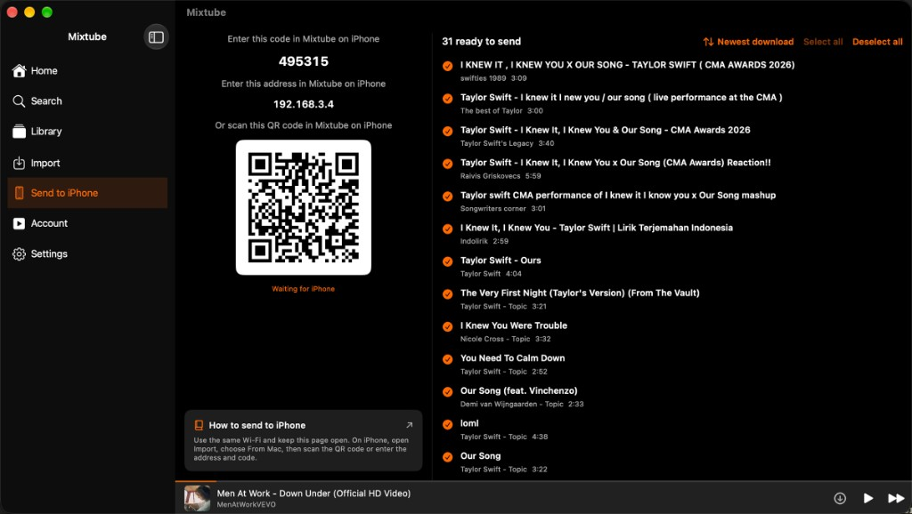
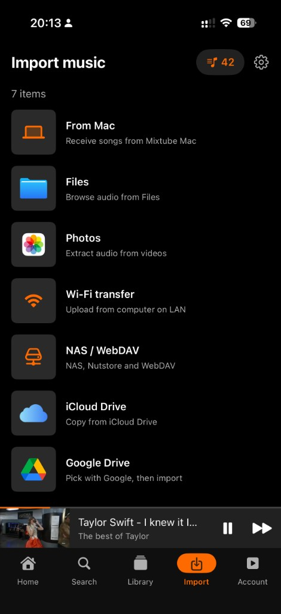
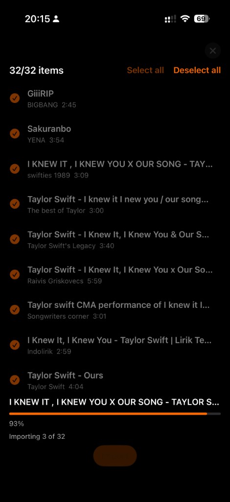
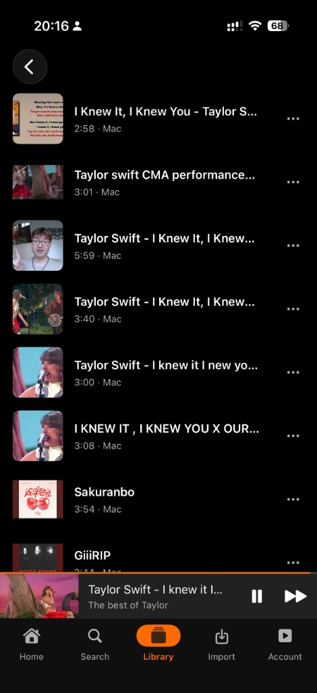

Send songs from Mac to iPhone
Install Mixtube on both the Mac and the iPhone, and connect both to the same Wi-Fi. Only songs saved on that Mac can be sent. A song you have only streamed, without saving it on the Mac, does not appear in the list.
1. Start sending on the Mac
- Open Mixtube on the Mac.
- In the sidebar, choose Send to iPhone.
The page shows a pairing code, this Mac’s address, and a QR code. Songs ready to send are listed on the right and start selected. Click a circle to leave a song out. Keep this page open. Closing it disconnects the iPhone.



2. Receive on the iPhone
- Open Mixtube on the iPhone and open the Import tab.
- Choose From Mac.
- Tap Scan QR Code and scan the code on the Mac. Or type the Mac address and pairing code, then tap Connect.
- Select the songs and tap Import.






3. After the transfer
When new songs finish, Mixtube says how many were imported and offers View. View opens Offline(Imported) in Library. Close stays on the current page.
If every selected song is already on the iPhone, Mixtube says “Already imported” and does not download them again.
If it does not connect
- The Mac and the iPhone must be on the same Wi-Fi. Cellular data on the phone, or a Mac that is only on Ethernet, will not connect.
- A wrong code is reported as an incorrect pairing code. Use the code on the Mac screen now, not one from an earlier attempt.
- Scanning needs camera access. If iOS blocked it, allow the camera for Mixtube in Settings, or type the address and code instead.
- If the Mac send page was closed or the Mac went to sleep, open Send to iPhone again, then try from the iPhone.